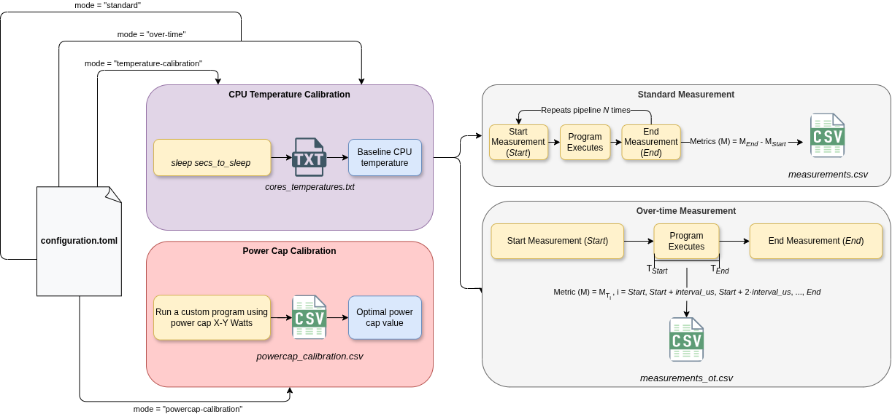
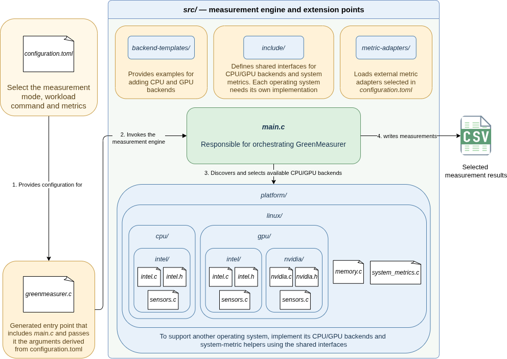

Configure
Choose a foreground command, metrics and a measurement mode in TOML.
Open source · Linux
University of Minho & HASLab, INESC TEC
Run a program, choose the metrics your hardware exposes, and work with the results in CSV. No changes to your program.
# Configure your workload $ $EDITOR configuration.toml # Generate and run $ ./src/main --directory my-build $ ./my-build/greenmeasurer → measurements.csv
01 / Workflow
A small workflow for repeatable measurements, with the configuration kept separate from the program.
Choose a foreground command, metrics and a measurement mode in TOML.
Compile an executable with your configuration embedded. Generation does not run the workload.
Run it and inspect the CSV. Available metrics depend on your hardware and permissions.

02 / Architecture
CPU and GPU backends and external metric adapters extend the measurement engine.

03 / Documentation
Start with a run, look up a metric, or add hardware support.
Install, configure and choose between standard, over-time and calibration.
Try itFollow a complete measurement from a sample program to CSV results.
UnderstandNames, units, functions and sources for Intel CPU, Intel GPU and NVIDIA.
BuildLifecycle callbacks, metric definitions and a practical guide for contributors.